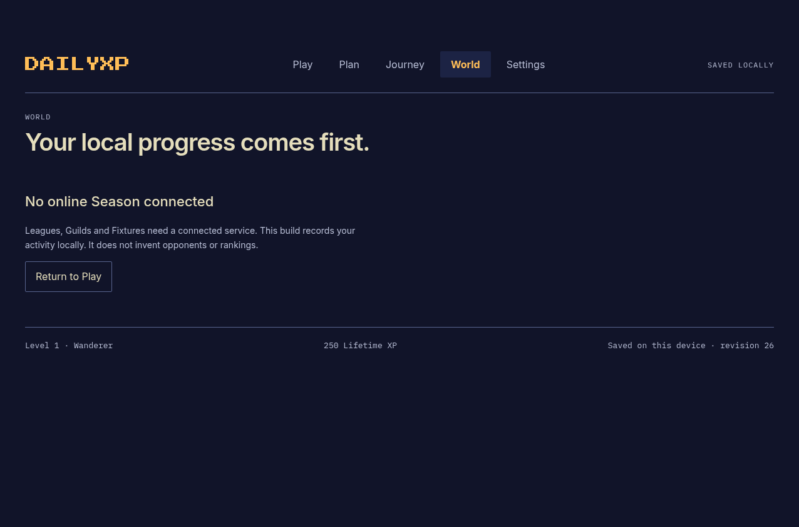
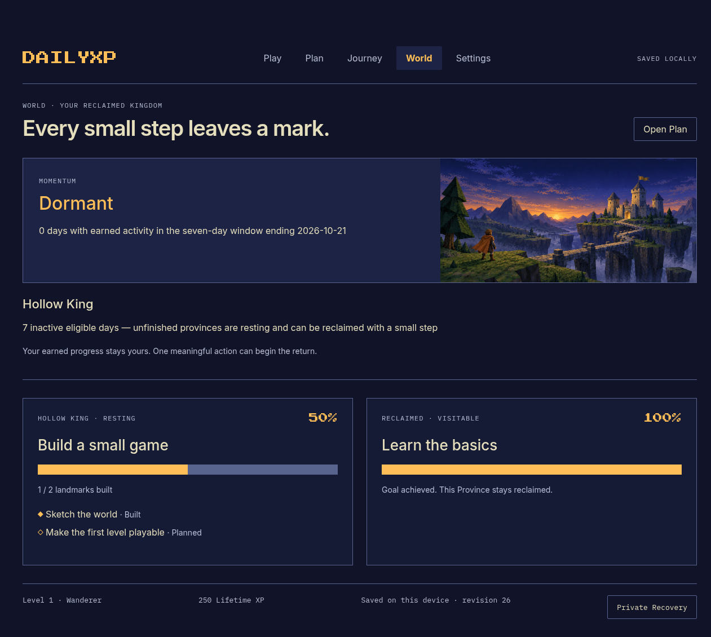
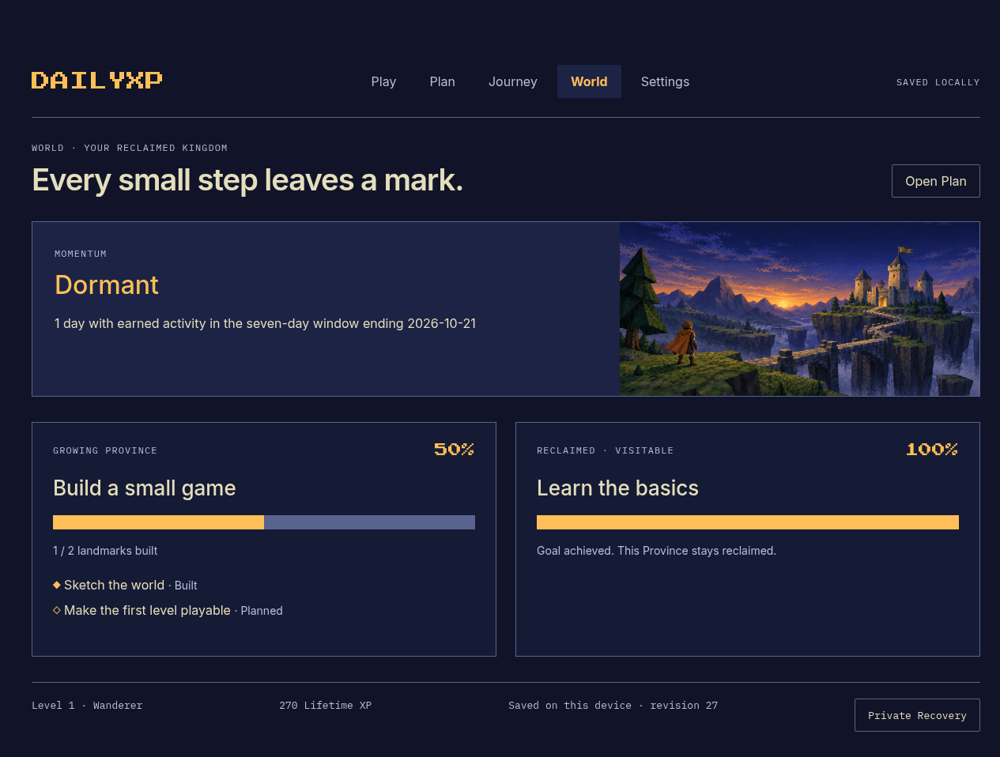
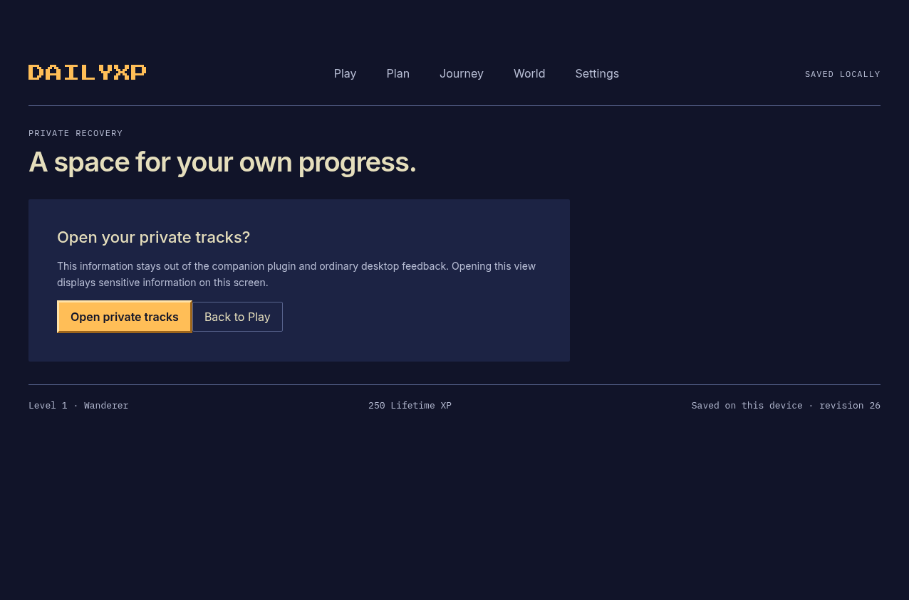
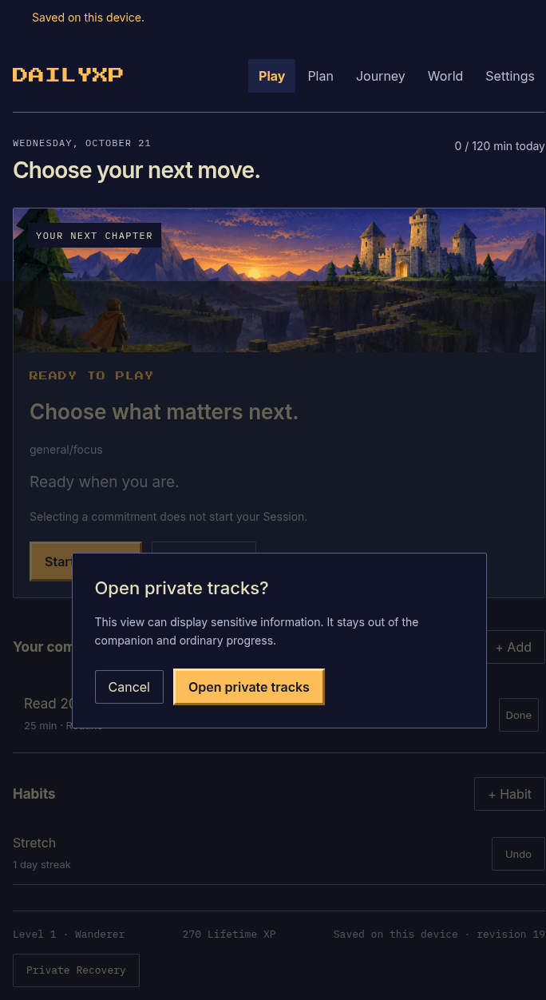
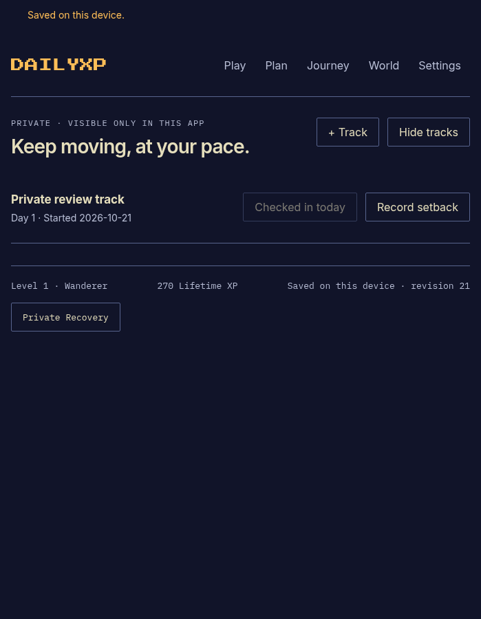

Try this in the actual DailyXP window. It uses a separate, labeled REVIEW PROFILE with demo progress. Your personal progress stays in the normal profile. These pictures are real application captures. Before uses the last installed application from merged PR #110.
World now reflects your Goals.
The previous World page showed an offline competition message instead of your Goal progress.
Click World. Find Build a small game: its two Milestones produce 50% fill. Learn the basics stays reclaimed at 100%.
Before completing the demo Habit, inspect Hollow King. The demo has eight elapsed eligible days. The marker appears only on unfinished territory.
Click Play → Complete beside One small creative step, then World. The resting marker disappears. The built landmark and earned XP remain.
Before

1
1 · The old page did not show Goal provinces.
During

2
2 · Only the unfinished Province rests. Its 50% progress is preserved.
After

3
3 · Growing Province returns immediately. The achieved Province stays reclaimed.
Private entry stays deliberate.
The previous inline gate had no separate confirmation, and the private workflow did not protect rapid window reopening.
Prepared state: one Demo private track, started three days ago, with no check-in today. No sensitive personal data is used.
Click the footer Private Recovery. Press Enter to cancel, or click Open private tracks to continue.
Click Check in → Save. A note is optional. Checked in today becomes disabled.
Click Record setback. Cancel first, then confirm if you want to try it. Restart begins another attempt; your XP stays.
Click Hide tracks, or close and reopen the window from the companion. Private details disappear and confirmation returns.
Before

1
1 · The previous entry replaced the whole page with an inline gate.
During

2
2 · Cancel has initial focus. Enter cancels; Escape also closes.
After

3
3 · A saved check-in disables the daily action. Setback always needs separate confirmation.
Demo changes remain available while you review. When local testing is finished, the owned cleanup archives this demo and restores the normal launcher. Merging still needs your explicit approval.